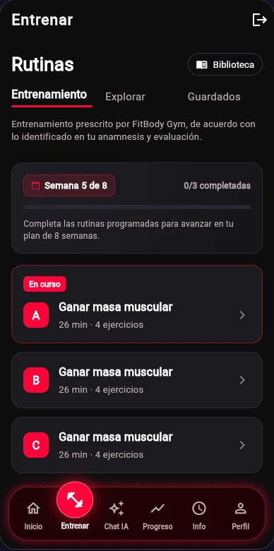
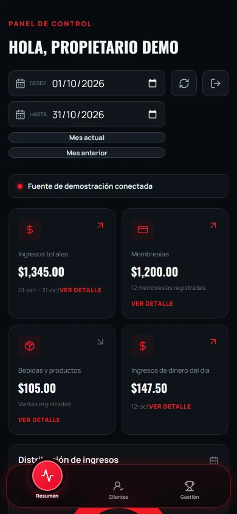

Sistema administrativo
Clientes, membresías, caja, inventario y control de acceso reunidos para el trabajo diario.
FITBODYGYM · ECOSISTEMA DIGITAL
Del mostrador al entrenamiento y a las decisiones del negocio.
FitBodyGym integra un sistema administrativo para la operación, una app móvil para miembros y un dashboard para propietarios. Las tres aplicaciones conservan las interfaces de los proyectos originales y usan datos ficticios locales. Ninguna demo accede a servidores, cuentas, pagos ni dispositivos reales.
EXPLORAR LAS DEMOS01 / EL PROYECTO
Clientes, membresías, caja, inventario y control de acceso reunidos para el trabajo diario.
Membresía, entrenamiento, guía, progreso y perfil en una experiencia móvil.
Indicadores de ingresos, membresías, visitas, productos y retención para los propietarios.
02 / RECORRIDO INTERACTIVO
Las tres aplicaciones abren con su pantalla de acceso original. Pulsa «Acceder» sin escribir usuario ni contraseña. Puedes navegar y probar acciones locales. Los cambios del sistema y del dashboard duran hasta recargar; la app de miembros restaura su escenario de ejemplo al recargar o reiniciar. Usa únicamente datos ficticios.

Explora clientes, planes, caja, inventario y validación de acceso simulada.
ABRIR DEMO ADMINISTRATIVA ↗
App Flutter original con datos ficticios locales.
ABRIR DEMO MÓVIL ↗
Consulta indicadores desde el celular y cambia el período de datos de ejemplo.
ABRIR DEMO DASHBOARD ↗03 / ALCANCE DE LA DEMO
El login conserva la entrada visual, pero «Acceder» abre directamente la demo.
Nombres genéricos, métricas y montos de ejemplo. Ninguna ficha de cliente real se incluye.
Las acciones se simulan en el navegador. No se procesan pagos, correos, cámaras, biometría ni sincronización.